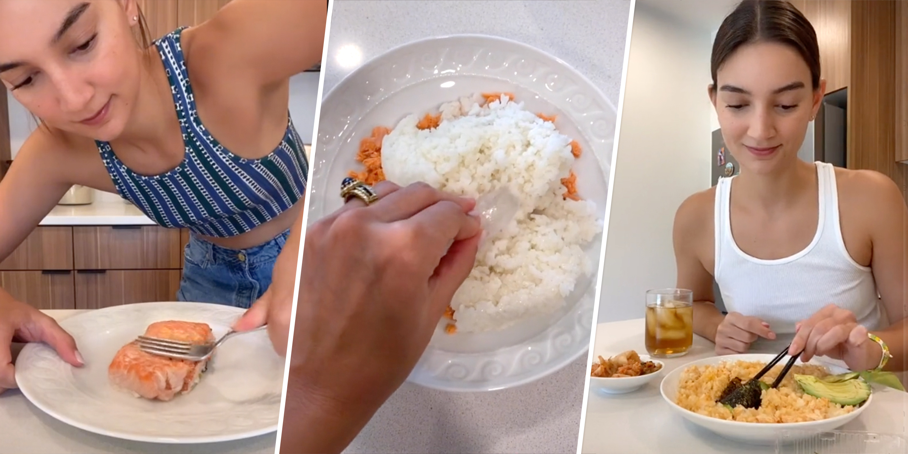

Salmon Rice Bowl

Description
Inspired by Tik-Tok influencer, Emily Mariko, this salmon rice bowl has become popular for lunches and dinners! This recipe is easy to follow and delicious to eat.
Ingredients
- 1 cup one-day old rice or cold rice
- 1 salmon filet
- 1 avocado
- 1 cup soy sauce
- 1 cup Kimchi
- Seasoned seaweed pack
- Kewpie mayonnaise
- Sriracha
Steps
- Microwave your bowl of rice with one ice cube on top to keep the moisture for the rice.
- Microwave if you have salmon prepped already or pan sear your salmon until fully cooked
- Add you salmon on top of your rice and break it up with a fork.
- Add your soy sauce, sriracha, and kewpie mayonnaise to your liking and mix the bowl until uniform.
- Slice an avocado and add it on top of your bowl.
- Enjoy with a side of kimchi and a seaweed snack!